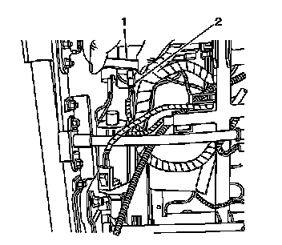

Front Seat Recliner Position Sensor Replacement
Front Seat Recliner Position Sensor Replacement
Removal Procedure
Caution: Refer to SIR Caution (SIR Caution) .
1. Remove the front seat. Refer to Bucket Seat Replacement (Bucket Seat Replacement) .

2. Disconnect the electrical connector from the sensor (2).
3. Rotate the sensor counterclockwise and remove it (1).
Installation Procedure
1. Install the sensor (1) in the motor and rotate it clockwise until it locks in to place.
2. Connect the electrical connector (2) to the sensor.